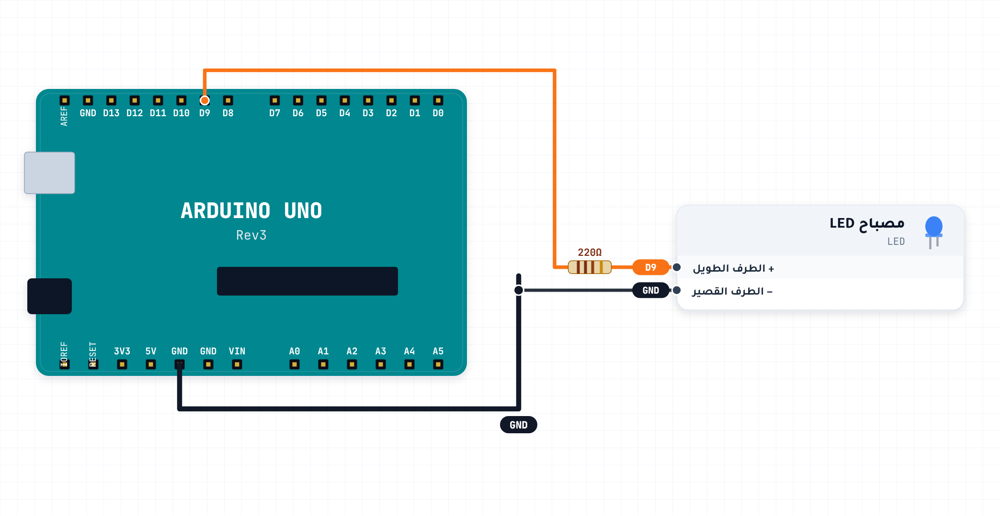

▶فيديو الشرح
نستعمل إشارات PWM ليتدرج الـ LED من الانطفاء إلى أقصى سطوع ثم يعود (تأثير التنفس).
1المكونات
ARDUINO UNOboardمصباح LEDLEDأسلاك توصيلJumper Wiresلوحة تجاربBreadboard
2مخطط التوصيل

اضغط على المخطط لتكبيره · نسخة SVG عالية الدقة
| القطعة | الطرف | يوصل إلى |
|---|---|---|
| مصباح LED | + الطرف الطويل | D9 عبر مقاومة 220Ω |
| مصباح LED | − الطرف القصير | GND |
3الكود
لا يحتاج هذا المشروع إلى أي مكتبة إضافية.
/* المشروع 11: التحكم في شدة إضاءة LED (PWM) — تأثير التنفس كتاب: 38 مشروع في شهر — لؤي النصري (@robotlouay) التوصيل: الطرف الطويل (+) للـ LED ← مقاومة 220Ω ← Pin 9 (~ يدعم PWM) الطرف القصير (−) ← GND منافذ PWM في Arduino Uno: 3، 5، 6، 9، 10، 11 */ const int LED_PIN = 9; void setup() { pinMode(LED_PIN, OUTPUT); } void loop() { // زيادة السطوع تدريجياً من 0 إلى 255 for (int b = 0; b <= 255; b++) { analogWrite(LED_PIN, b); delay(8); } // إنقاص السطوع تدريجياً من 255 إلى 0 for (int b = 255; b >= 0; b--) { analogWrite(LED_PIN, b); delay(8); } delay(300); }
4كيف يعمل؟
- analogWrite(9, قيمة) تقبل 0 إلى 255
- حلقة for ترفع السطوع تدريجياً
- حلقة ثانية تخفضه
- يجب استعمال منفذ عليه علامة ~
⚠ قبل توصيل الكهرباء: راجع كل سلك مع الجدول أعلاه، وتأكد من عدم وجود تماس بين 5V و GND. اختر اللوحة والمنفذ الصحيحين من قائمة Tools في Arduino IDE.